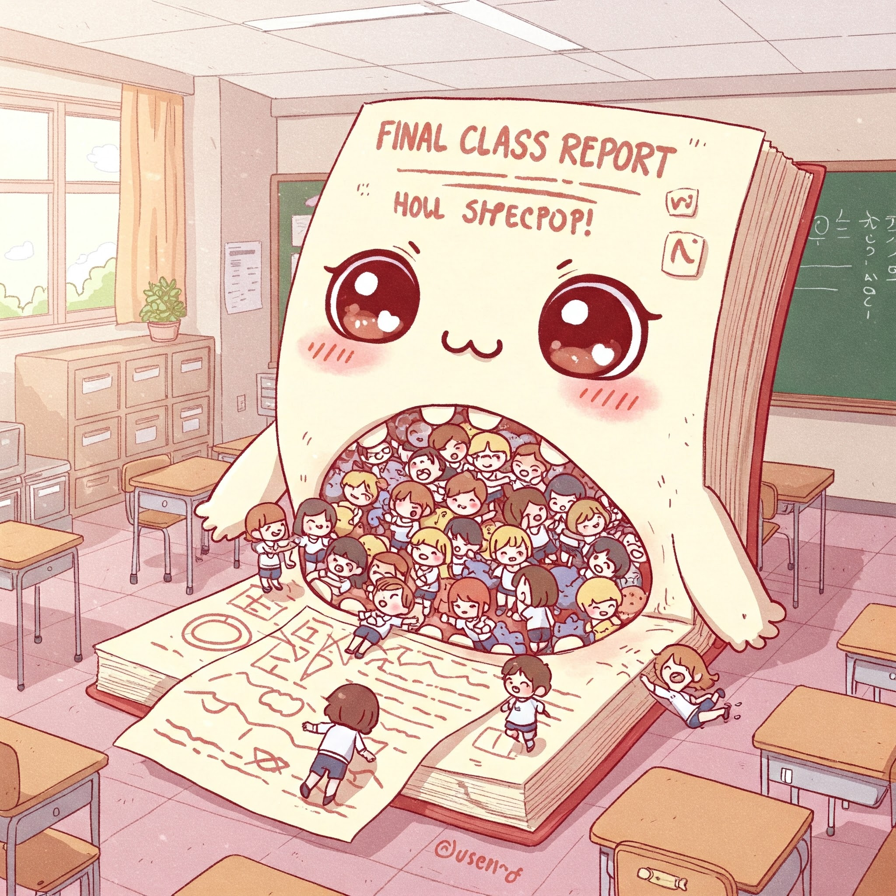
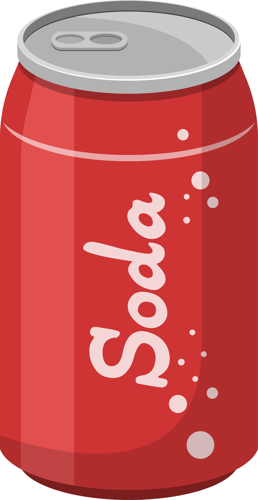
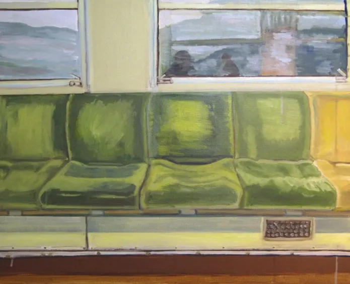
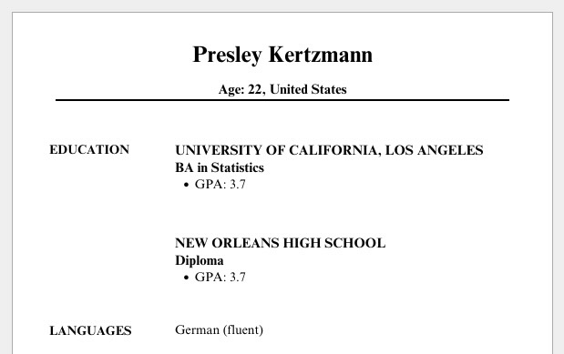

Week 12: Final Projects, Causality and Racecraft
DSAN 5450: Data Ethics and Policy
Spring 2026, Georgetown University
Making Projects Less Scary

How Do I Pick A Topic?
- I know that “whatever is interesting to you” can be way overly-vague!
- So, one approach is: imagine yourself in a job interview for your dream job, and they bring up DSAN 5450: “Interesting, what did you do in that class?”
- [Insert project elevator pitch] “Wow, that’s such a cool project, we really want someone who can [say] take a data-driven approach to a policy question like that. Ur hired!”
- (Jeff gets a commission: 10% of your salary)
The Rating System (Science-Based)

Discussing Fairness
Below Expectations |
"This algorithm is unfair" |
| Meets Expectations |
"This algorithm violates the Predictive Parity criterion of fairness when run on this dataset" |
| Exceeds Expectations |
"This algorithm violates the Predictive Parity criterion when run on this dataset, but that’s because [other mitigating factor]. It still satisfies Within-\(\varepsilon\) Predictive Parity, for \(\varepsilon = 0.02\)" |
| Doing Too Much  |
All of the above, plus I developed a new better algorithm that is more fair |
Evaluating Policy
| Below Expectations |
"This policy is bad" |
| Meets Expectations |
"This policy is bad bc it's biased towards [group 1], and doesn't take sufficient account of the welfare of [group 2]" |
| Exceeds Expectations |
"This policy is bad bc it's biased towards [group 1], and doesn't take sufficient account of the welfare of [group 2], which violates the Rawlsian notion of what would be chosen by rational agents behind a 'veil of ignorance'" |
| Doing Too Much |
"This policy is bad bc the inferred welfare weights \(\omega_i\) are \(0.1632\) off from the optimal welfare weights \(\omega_i^*\)" |
Frequently Awesome Questions
- How much data-processing/R/Python is required? None!
- You can think of it like: In every other DSAN class, we plop a dataset in front of you and say “do the thing”
- Here you can (and should) first ask, “is [the thing] an effective way to address this issue?”
- Example: archive of missing datasets
- Sometimes the problem is not “We haven’t trained a hyperboosted 70-layer quantum neural net on this yet!”
- Sometimes it’s “nobody with power cares enough about this to make a dataset in the first place [or they purposefully prevent it]”
- Other times it’s “people with power did care enough about this to make a dataset, and it should be destroyed”
- May require… exploratory “meta-analysis” of datasets: finding data not necessarily for analysis but, to see what is/isn’t out there!
Getting From Here to There
- Minimum Viable Product (MVP)
- \(\leadsto\) Final Product (but… Hofstadter’s Law)
Causality and Identity Formation
- Race as a Noun vs. Race as a Verb (“Racecraft”)
- Race as a static property vs. race as a social practice
- Subject-Object Distinction (Next slide + W13)
But First… Phenomenology
- “Objective” account: Roquentin sits down on a bus seat; “Subjective” account:
I lean my hand on the seat but pull it back hurriedly: it exists. This thing I’m sitting on, leaning my hand on, is called a seat. They made it purposely for people to sit on, they took leather, springs and cloth, they went to work with the idea of making a seat and when they finished, that was what they had made. They carried it here, into this car and the car is now rolling and jolting with its rattling windows, carrying this red thing in its bosom. I murmur: “It’s a seat” […] But the word stays on my lips: it refuses to go and put itself on the thing. It stays what it is, with its red plush, thousands of little red paws in the air, all still, little dead paws…

W.E.B. Du Bois and the Epistemological One-Way Mirror
Black people in America are […] born with a veil […] in this American world—a world which yields him no true self-consciousness, but only lets him see himself through the revelation of the other world. It is a peculiar sensation, this double-consciousness, this sense of always looking at oneself through the eyes of others, of measuring one’s soul by the tape of a world that looks on in amused contempt and pity. One ever feels his two-ness—an American, a Negro; two souls, two thoughts, two unreconciled strivings; two warring ideals in one dark body. (Du Bois 1903)
- The veil: the world is seen and experienced differently on either side of the color line
- One-way mirror: Whites project their constructions of Blacks onto the veil and see their projections reflected on it \(\Rightarrow\) the power to define themselves and others
- The projections of whites onto the veil become realities (reification!) that Black subjects have to contend with in their self-formation.
- Twoness: in process of self-formation, the racialized subject must account for the views of two different social worlds—the Black world, constructed behind the veil, and the white world, which dehumanizes via lack of recognition of their humanity.
\(\textsf{Race}_{\textsf{Variable}}\) vs. \(\textsf{Race}_{\textsf{Construct}}\)
- Careful scientific, causal studies measure the effect that changing \(X\) (\(do(X)\)) has on \(Y\), controlling for \(C\) (via, at least under the hood, “Do-Calculus”)
- But, even the most careful, controlled (and thus informative!) experiments must, at some level, partition variables into “race” and “not race”
- Keep in back of your mind as we look at example of how (measured by thorough, statistically-principled experiment), race can have direct, measurable, causal impacts on important aspects of our everyday lives
Racial Discrimination
- Marianne Bertrand and Sendhil Mullainathan. 2004. “Are Emily and Greg More Employable Than Lakisha and Jamal? A Field Experiment on Labor Market Discrimination.” American Economic Review. (Bertrand and Mullainathan 2004)
We study race in the labor market by sending fictitious resumes to help-wanted ads in Boston and Chicago newspapers. To manipulate perceived race, resumes are randomly assigned African-American- or White-sounding names. White names receive 50 percent more callbacks for interviews. Callbacks are also more responsive to resume quality for White names than for African-American ones. The racial gap is uniform across occupation, industry, and employer size. We also find little evidence that employers are inferring social class from the names. Differential treatment by race still appears to still be prominent in the U.S. labor market.
- So… Is [Solved-ness of problem] = [Closeness of racial gap to 0%]?
- Even on solely empirical, ahistorical basis (meaning, even without reparations for past harms in antecedents), there are reasons why 0% gap may not be the goal…
- To see why, we have to dig into race as a verb rather than a noun
“Controlling for” Everything Besides Race


- Economist assertion: everything is “same” except for [name \(\leadsto\) race]
- Weird part of assertion: only true if the “everything” is stripped of context… But, stripped of context, how would we get [name \(\leadsto\) race] in the first place?
Age Discrimination?


Fair \(\iff\) [\(\Pr(\text{Admit Presley}_{12}) = \Pr(\text{Admit Presley}_{22})\)]?
- Root of issue: [BA Stats, UCLA, 3.7] has no “free-floating” meaning—it’s attached to a person \(\Rightarrow\) affected by/interpreted w.r.t. their “protected” characteristics
General Fairness Definition?
- Pessimistic conjecture: like bias-variance tradeoff (no free lunch), may be a “generality-[loophole-avoidance] tradeoff”…
- May need to ‚Äúdescend‚Äù from üëÜPlatonic ideal fairness to üëáAristotelian topic-specific fairness ü§î Hence W12-13!
- We saw this issue before, in different form! Rawls on “correct” ranking of rights
- [Rawls: No “correct” ordering; Different societies \(\leadsto\) different social value systems, power struggles \(\leadsto\) different orderings]

- [Me, I guess? üôà: No ‚Äúcorrect‚Äù fairness defn for racial discrimination; Different societies \(\leadsto\) different racial/caste/identity formations, power struggles \(\leadsto\) different fairness defns]
“Cool Theory, I Guess…”
- Less pessimistic result of pessimistic conjecture: Some hope from Fodor-Sperber model (disclaimer: also terrifying, Philip K. Dick Minority Report-style dystopian possibilities)
- “Good luck measuring ideas inside of people’s heads… I’ll be over here measuring real things and doing real data science!” -My innumerable Wile E. Coyote-style opps


“Cool Theory, I Guess…”
(Brace yourself: Jeff‚Äôs Trying-My-Best Fodor-Sperber model of socially-constructed ‚Äúrace‚Äù on next few slides‚Ķ I‚Äôm sorry in advance üôàüôàüôà Did you know you can italicize emojis)

Opening A Big Can Of Worms
- Social interactions among \(t^e_0\), \(t^e_1\), \(t^e_2\)…

Opening A Big Can Of Worms
- Social interactions among \(t^e_0\), \(t^e_1\), \(t^e_2\)…
- Mediated by external things \(o^e_3\) to \(o^e_8\) (giving rise to patterns of interaction)…

Opening A Big Can Of Worms
- Social interactions among \(t^e_0\), \(t^e_1\), \(t^e_2\)…
- Mediated by external things \(o^e_3\) to \(o^e_8\) (giving rise to patterns of interaction)…
- Each person \(x\) forming their own internal representations \(\widetilde{t^x_0}\), \(\widetilde{t^x_1}\), \(\widetilde{t^x_2}\) of one another based on patterns of interaction, then
- Generalizing to an internal representation of a “type of person” \(\widetilde{t^x_9}\)…

Opening A Big Can Of Worms
- Social interactions among \(t^e_0\), \(t^e_1\), \(t^e_2\)…
- Mediated by external things \(o^e_3\) to \(o^e_8\) (giving rise to patterns of interaction)…
- Each person \(x\) forming their own internal representations \(\widetilde{t^x_0}\), \(\widetilde{t^x_1}\), \(\widetilde{t^x_2}\) of one another based on patterns of interaction, then
- Generalizing to an internal representation of a “type of person” \(\widetilde{t^x_9}\)…
- Which they then externalize as \(t^x_9\).
- \(t^0_9\), \(t^1_9\), \(t^2_9\) “congeal” into a shared external representation \(t_9^e\) via social mechanism (discussion, media, culture, propaganda, parenting, religion, education, …) \(\Rightarrow t^e_9\) “reified” (causal effects on \(t_0\), \(t_1\), \(t_2\))